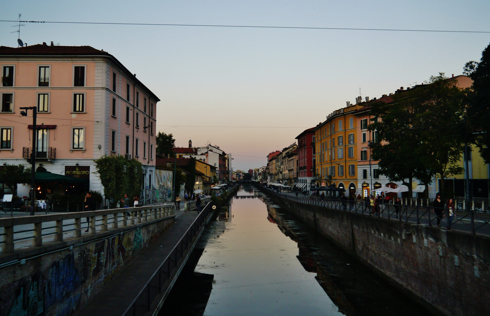

For global searches
Dubai trip cancelled — what can you visit instead?
If your Dubai itinerary was cancelled, rescheduled, or you’re reconsidering travel due to current events, the fastest way to “save” your holiday is to switch to a connected destination with simple logistics.
Language: EN • ES • FR • DE • NL • PL
This page focuses on planning during disruptions (not politics). Always follow official advisories.


First: don’t waste your vacation days
Step 1 — secure a base
Pick a city with strong connections. Book accommodation in a transport‑smart area.
Step 2 — keep the plan light
Plan 1–2 “must‑do” items per day. Keep the rest flexible until flights are confirmed.
Step 3 — focus on comfort
A calm, well‑equipped base reduces stress — especially for families and long travel days.
Keyword people search: “Dubai cancelled, what can I do instead?” — the answer is a connected city you can enjoy even on short notice.
Why Milan is a strong alternative to Dubai
- Transport hub: airports + Milano Centrale rail hub
- City break value: Duomo, Brera, Navigli, design districts
- Easy add‑ons: Lake Como, Bergamo, Verona
- Comfort base: a spacious apartment near Centrale means less friction

FAQ
My Dubai trip was cancelled. Where can I go instead?
If your dates are fixed, many travelers switch to a connected European city so they can rebuild plans quickly. Milan works well as a Plan B because it has airports, major rail links, and easy day trips — without complex logistics.
Dubai flights cancelled — should I cancel everything?
Not necessarily. Start with a simple skeleton plan: choose a destination, secure accommodation, then plan 1–2 must‑do items per day. Keep everything else optional until your route is confirmed.
What is the best area to stay in Milan for transport?
Staying near Milano Centrale is the simplest choice if you want fast airport transfers, trains for day trips, and easy metro connections across the city.
Is Milan a good alternative to Dubai for a city break?
If you want food, culture, shopping and iconic landmarks with excellent transport connections, Milan is a strong alternative — plus you can add day trips like Lake Como, Bergamo or Verona.
Want a premium Plan B base near Central Station?
Luxury apartment near Milano Centrale — ideal if you’re rebuilding a holiday fast.
Check availability